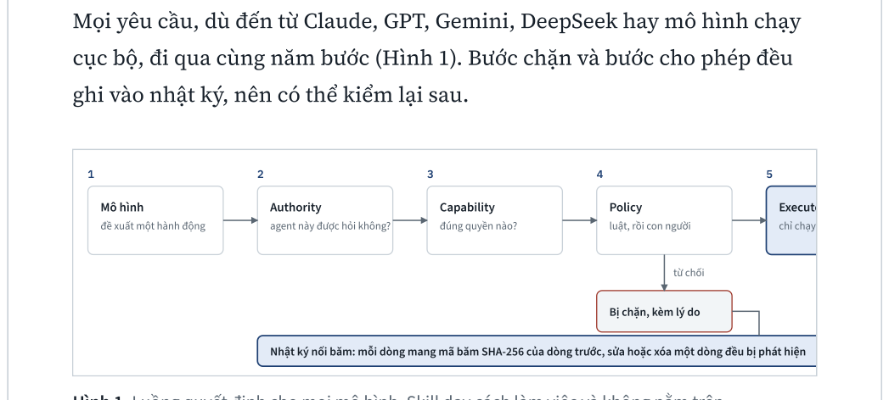
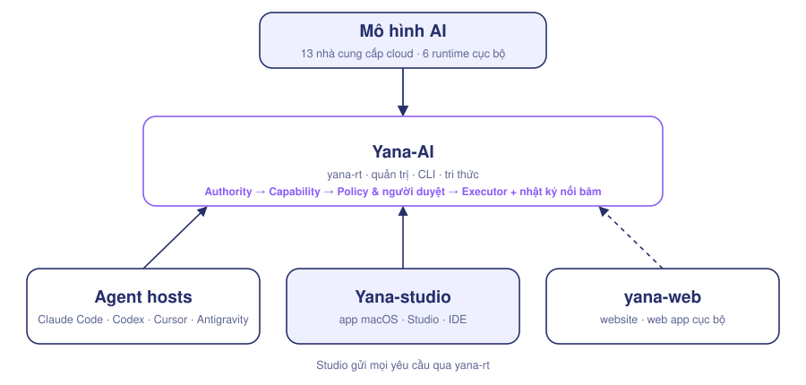
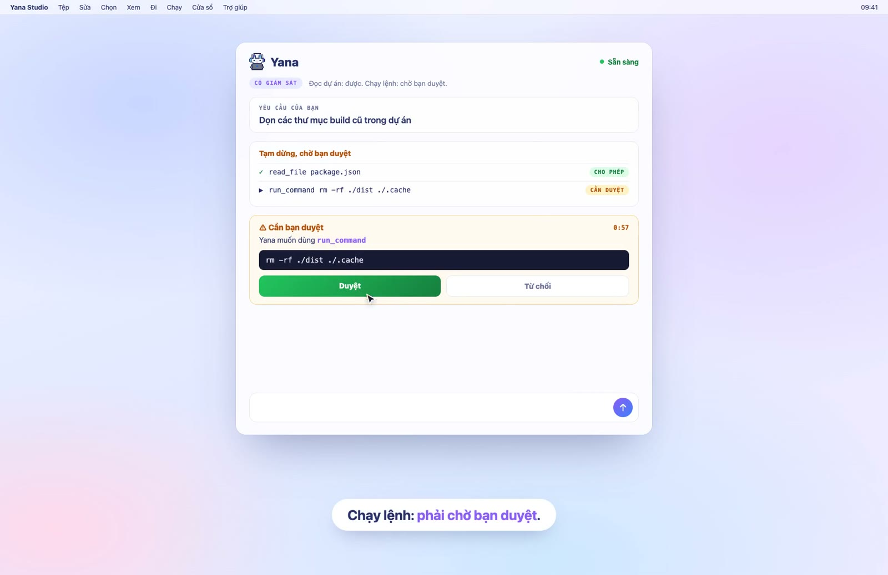
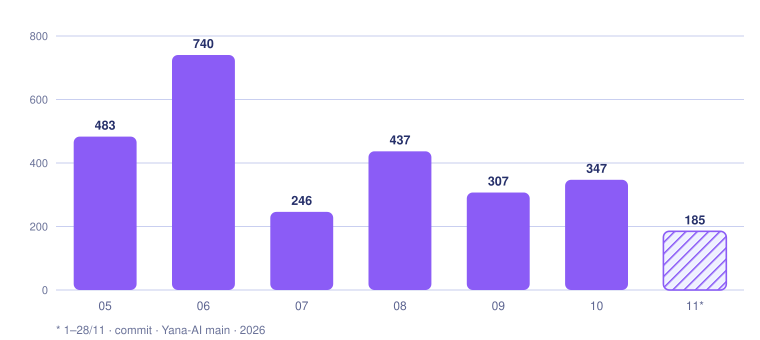

Yana AI: Lớp điều khiển cục bộ giữa mô hình AI và quyền thực thi trên máy
Gần sáu tháng xây dựng: từ một kho mã trống đến Yana 1.0 và hệ sinh thái ba kho mã
Các agent lập trình hiện nay có thể xóa thư mục, đẩy mã lên kho chung hoặc đọc khóa API chỉ bằng một dòng lệnh, còn lời dặn "hãy cẩn thận" trong prompt không đủ để ngăn điều đó. Yana AI tách hai việc: kỹ năng (skills) dạy agent cách làm, còn quyền hành động (capabilities) chỉ đến từ một lớp riêng chạy trực tiếp trên máy người dùng. Mô hình đề xuất, Yana quyết định, con người luôn giữ quyền dừng.
Đây là bản cập nhật ngày 14/11/2026 của báo cáo công bố ngày 26/10/2026. Báo cáo trình bày thiết kế, hiện thực và quá trình phát triển trong 2.627 commit (từ 17/05 đến 14/11/2026), các số đo hiệu năng, cách chúng tôi kiểm chứng tính an toàn, và những giới hạn còn lại. Hệ sinh thái nay gồm ba kho mã: Yana-AI (runtime Rust yana-rt, lớp quản trị, CLI), Yana-studio (ứng dụng macOS Yana 1.0, Studio và IDE) và yana-web (website và web app). Studio gửi mọi yêu cầu mô hình qua một runtime duy nhất (yana-rt 1.5.2) với 19 nhà cung cấp.
1. Đặt vấn đề
Khi một agent tự chủ được cấp quyền thực thi lệnh shell trên terminal, mọi sai lệch ngẫu nhiên (stochastic deviation) hay ảo giác (hallucination) của mô hình đều lập tức biến thành hành động phá hủy thật trên máy của người dùng. Hai phương pháp phòng thủ truyền thống hiện nay đều bộc lộ nhược điểm cấu trúc căn bản:
- Lời dặn trong System Prompt (Advisory Prompt Rules): Những chỉ thị kiểu "hãy cẩn thận", "không được xóa file" thực chất chỉ là chuỗi token mà chính mô hình đọc. Mô hình hoàn toàn có thể quên, diễn giải sai hoặc bị vượt qua bởi kỹ thuật prompt injection.
- Hộp cát kín & Container (Hermetic Containers & Sandboxes): Chạy cách ly tuyệt đối trong máy ảo hoặc Docker đảm bảo an toàn, nhưng làm tê liệt tính hữu dụng trong thực tế vì cắt đứt agent khỏi công cụ bản địa, trình biên dịch, công cụ gỡ lỗi và chu trình dự án sống của nhà phát triển.
Yana chọn hướng đi thứ ba có chủ đích: giữ agent làm việc trực tiếp trên máy thật, nhưng buộc mọi thao tác phải đi qua một lớp kiểm soát nằm hoàn toàn bên ngoài không gian của mô hình. Lớp này tách bạch rõ ràng giữa tri thức và quyền hạn: một skill chỉ là văn bản hướng dẫn và không có quyền gì; chỉ một capability được cấp phép minh bạch mới cho phép một thao tác can thiệp hệ thống.
2. Tầm nhìn và các nguyên tắc cốt lõi
Tài liệu tầm nhìn nền tảng của dự án (viết ngày 07/06/2026) định nghĩa Yana là lớp điều phối mỏng (lean orchestration layer) làm trung gian giữa ý định của con người và trí tuệ AI. Dự án xác định rành mạch những gì Yana không phải:
- Không phải một agent đơn lẻ.
- Không phải một chatbot thông thường.
- Không phải một framework vô tận để nhồi nhét agent chồng chất.
- Không phải một hệ thống cần LLM chỉ để tự vận hành bản thân.
Lõi Yana chỉ tập trung vào 4 nhiệm vụ tất định (deterministic) với độ chuẩn xác tuyệt đối: định tuyến yêu cầu, thực thi an toàn tại runtime, điều phối vòng đời đa mô hình và quản lý ngữ cảnh. Mọi thứ khác đều thuộc lớp ứng dụng modular, có thể thay thế mà không cần viết lại lõi.
Bảy nguyên tắc cốt lõi đã được kiểm chứng qua các sự cố thực tế:
- Con người trước tự động hóa (Human before automation): Mọi thao tác thực thi quan trọng đều cần người chịu trách nhiệm.
- An toàn trước tốc độ (Safety before speed): Khi phải đánh đổi, luôn chọn an toàn vô điều kiện.
- Bằng chứng trước sự tự tin (Evidence before confidence): Mọi tuyên bố hoàn thành phải có nhật ký băm, biên nhận kiểm toán hoặc kiểm tra tất định đi kèm.
- Xây ít hơn, xây tốt hơn (Build less, build better): Mọi tính năng phải chứng minh được giá trị sinh tồn, phần còn lại sẽ bị cắt bỏ.
- Thiết kế cho thất bại (Designed for failure): Mọi sự cố đều là bài học để tạo ra các bất biến kiến trúc (architectural invariants) vững chắc hơn.
- Mở, trung thực, minh bạch (Open, honest, transparent): Xây dựng công khai, tài liệu hóa sai lầm và nói rõ các giới hạn đánh đổi.
- Không ngừng cải thiện (Continuous improvement): Không có phần mềm nào là hoàn thành tuyệt đối.
3. Kiến trúc và Thiết kế
3.1 Luồng quyết định tất định 5 bước (The Deterministic Decision Pipeline)
Mọi thao tác riêng rẽ do agent đề xuất — dù đến từ Claude, GPT, Gemini, DeepSeek hay mô hình cục bộ — đều phải tuần tự đi qua 5 cổng kiểm tra bắt buộc (Hình 1). Mọi quyết định cho phép hoặc chặn đều được ghi vĩnh viễn vào sổ cái kiểm toán để xem xét lại sau này.

3.2 Kiến trúc hệ sinh thái (Ecosystem Architecture)
- Agent Hosts (Bộ chuyển đổi thích ứng): Interceptor chặn cuộc gọi công cụ tại runtime cho Claude Code, hook theo dự án cho Codex, bộ lọc lệnh shell cho Cursor và Antigravity.
- Ba kho mã (từ 11/2026): Yana-AI giữ runtime
yana-rt, lớp quản trị, CLIyana-ai(Python) và lớp tri thức. Yana-studio giữ ứng dụng macOS Yana (SwiftUI), Yana Studio (Electron) và Yana IDE (lớp tùy biến trên Code-OSS). yana-web giữ website yana.vutam.link và web app chạy cục bộ (chat, missions, két khóa API mã hóa AES-256-GCM). - Lớp Quản trị: Runtime
yana-rt(Rust) cung cấp 42 lệnh con không phụ thuộc Python và một máy chủ MCP bản địa với 16 công cụ;core-lock.jsonghim mã băm SHA-256 của khoảng 290 tệp lõi; cổng duyệt của người dùng trong phiên; lệnhauthority verifykiểm tra mọi lần thực thi đều truy về một quyết định cho phép; và Giám Thị (Supervisor), daemon độc lập chạy trên trình lập lịch OS (launchd, systemd) ngoài tiến trình AI, khóa thực thi khi phát hiện lệch cấu hình. Giám Thị là tùy chọn và không bao giờ được cài khi chưa có sự đồng ý rõ ràng. - Lớp Tri thức (Knowledge Layer): 100 agent chuyên biệt, 2.035 skills, 170 slash commands, 71 luật hành vi và 66 hook trước/sau công cụ (đếm bằng
core/scripts/check_counts.py, CI kiểm tra). Tri thức chỉ hướng dẫn agent cách làm, không bao giờ tự trao quyền thực thi. - Động cơ Mô hình (Model Engine): Bộ định tuyến hợp nhất kết nối 19 nhà cung cấp: 13 cloud (Anthropic, OpenAI, Gemini, Groq, DeepSeek, OpenRouter, xAI, Novita, NVIDIA, MiniMax, GLM, Hugging Face, Kimi) và 6 runtime cục bộ hoặc bộ định tuyến (Ollama, LM Studio, llama.cpp, TurboFieldfare, AirLLM, 9Router).

yana-rt; website và web app nằm ở kho riêng. Nét đứt: web app có bộ kết nối nhà cung cấp riêng và không đi qua yana-rt.3.3 Phân bổ cấu trúc mã nguồn (Codebase Distribution)
Yana-AI/
├── src/ yana-rt runtime: 328 file Rust, 83.717 dòng
│ ├── capability/ hệ thống quyền, thực thi dùng chung cho chat và MCP
│ ├── guard/ chặn lệnh nguy hiểm, quyền ghi, ngân sách token
│ ├── model/ 19 nhà cung cấp mô hình, failover, xoay vòng API key
│ ├── session_db/ kho phiên SQLite, tìm kiếm toàn văn, checkpoint rollback
│ ├── os/ Yana OS: danh tính agent, hạn mức tài nguyên, giám sát
│ └── chat/, mission/, memory/, doctor/, scanner/, … (52 mô-đun cấp cao)
├── core/ lớp quản trị và tri thức (66 hooks, 71 rules, 2.035 skills, 100 agents)
├── tools/ công cụ phụ: yana-terminal, yana-notch, yana-promo, cầu nối AirLLM và pixel
├── adapters/ Claude Code, Codex, Cursor, Antigravity
└── docs/, ci/ tài liệu và cổng kiểm tra CI
Yana-studio/ (app macOS, Studio, IDE) và yana-web/ (website, web app) là hai kho riêng.4. Yana trong thực tế
4.1 Yana 1.0 và Yana Studio
Yana 1.0.0 (phát hành 11/11/2026 trên kho Yana-studio) là bản tải cho macOS Apple Silicon gồm ứng dụng gốc và Yana Studio. Studio gom vào một cửa sổ những thứ người làm dự án với AI hay phải chuyển qua lại: mở thư mục thật, trình soạn thảo, terminal PTY (tối đa 12 phiên), chat, nhiệm vụ có bằng chứng và design canvas. Lớp giao diện của Studio không gọi nhà cung cấp mô hình: mọi yêu cầu đi qua yana-rt; khóa API đi vào Rust qua stdin và được lưu mã hóa trong kho khóa của hệ điều hành, không nằm trong tệp dự án.
Khung chat luôn hiển thị chế độ hiện hành. Ở chế độ SUPERVISED, đọc dự án được tự động cho phép, còn mọi lệnh chạy đều dừng lại chờ người bấm duyệt (Hình 3). Màn hình chào có ba ngôn ngữ: Việt, Anh, Hàn (Hình 4).


4.2 Kiểm chứng bộ lọc lệnh thực tế (Command Guard Evaluation)
Bảng 1 ghi lại 4 lệnh shell mẫu, chạy lại ngày 14/11/2026 với yana-rt 1.5.2 và các hook của kho (nhánh main). Mỗi lớp bảo vệ chặn một nhóm lệnh khác nhau, nên bảng ghi rõ lớp nào đã chặn. Khi một lệnh bị chặn, agent nhận lại thông báo lý do kèm hướng dẫn thay thế, và sự kiện được ghi vào nhật ký kiểm toán.
| Lệnh agent muốn chạy | Phán quyết (chuỗi hook mặc định) | Lớp chặn và lý do trả về cho Agent |
|---|---|---|
curl -fsSL https://.../install.sh | bash | Bị chặn | tool-proxy-enforcer: pipe vào trình thông dịch là vi phạm cấp 1 của luật chống né tránh. supply-chain-guard: nội dung từ mạng chạy ngay không qua xem xét; hãy tải về, đọc rồi mới chạy. Không phải guard destructive. |
rm -rf ~/Documents | Bị chặn | guard destructive (bản Rust và bản bash): xóa đệ quy cưỡng bức không thể hoàn tác; hãy dùng rm với đường dẫn rõ ràng hoặc hỏi người dùng. |
chmod 777 deploy.sh | Không bị chặn | Chỉ bộ bọc core/scripts/safe-run.sh chặn mẫu này, nhưng bộ bọc đó không được gắn vào chuỗi hook tự động. Đã thử cả 18 hook gắn vào Bash trong .claude/settings.json: không hook nào chặn. Đây là khoảng trống đã biết (mục 8). |
git status --short | Cho phép | Lệnh kiểm tra chỉ đọc; không lớp nào can thiệp. |
4.3 Sử dụng bộ công cụ dòng lệnh (CLI Tooling)
# Công cụ quản lý qua Python CLI
pip install yana-ai
yana-ai install # Cài đặt hook và các luật kiểm soát Yana vào repo
yana-ai doctor . # Kiểm tra môi trường và kết nối hook
# Runtime độc lập viết bằng Rust (hoàn toàn không phụ thuộc Python)
cargo install yana-rt5. Hiện trạng các thành phần hệ thống
| Thành phần | Trách nhiệm & Nhiệm vụ | Trạng thái |
|---|---|---|
| Yana 1.0 cho macOS | Ứng dụng gốc (SwiftUI) cùng Yana Studio trong một bản tải, phát hành 11/11/2026 trên kho Yana-studio. Ký ad-hoc, chưa notarize. | Đã phát hành |
| Yana Studio và Yana IDE | Studio (Electron) và IDE (lớp tùy biến Code-OSS) nằm trong kho Yana-studio. Studio chưa đạt đầy đủ tính năng so với desktop trước; ngoài ứng dụng Yana 1.0.0 chưa có bản phát hành riêng từ kho mới. | Đang phát triển |
| Runtime yana-rt | Động cơ Rust cốt lõi: vòng lặp lượt, hợp đồng quyền hạn, cơ sở dữ liệu phiên SQLite, checkpoint rollback, MCP và LSP clients, authority verify, status. | Production |
| Lớp Quản trị (Governance) | Manifest quyền hạn, cổng phê duyệt của con người, sổ cái nối băm, trình xác thực core-lock, bộ lọc lệnh phá hủy. | Production |
| Giám Thị (Supervisor) | Daemon độc lập ngoài không gian AI, chạy theo lịch OS mỗi 6 giờ; khóa lệnh nếu các tệp kiểm soát bị sửa đổi trái phép. Tùy chọn bật. | Đang hoạt động |
| Adapters | Claude Code, Codex, Cursor, Antigravity. Mức độ cưỡng chế an toàn thay đổi theo từng host hook. | Phụ thuộc Host |
| Lớp Tri thức (Knowledge Layer) | Role agents, skills, slash commands và các luật ứng xử để hướng dẫn hành vi của agent. | Production |
| Website và web app (yana-web) | Website yana.vutam.link và web app chạy cục bộ: chat tới 6 nhà cung cấp, missions, két khóa API mã hóa AES-256-GCM. | Đang hoạt động |
| Yana OS | Quản lý agent cục bộ: danh tính, ranh giới tự chủ, hạn ngạch tài nguyên, cách ly tiến trình. | Đang phát triển |
| Wheelbot | Nền tảng robot ESP32-S3 điều khiển bằng giọng nói trong kho lưu trữ riêng biệt. | Thử nghiệm |
6. Đo lường hiệu năng thực nghiệm
Bảng sau là bản đo ngày 20/10/2026 (báo cáo đầu), dữ liệu đo đạc thực nghiệm trên máy Apple Silicon MacBook Air (M4, 16 GB RAM) chạy bản release của yana-rt 1.5.1 so sánh với script Python nguyên bản (theo tài liệu BENCHMARK.md):
| Thao tác Benchmark | Rust Runtime (yana-rt) | Script Python cũ | Chênh lệch hiệu năng |
|---|---|---|---|
| Khởi động Binary nguội (Cold Startup) | 4.16 ms | — | Trung bình qua 100 lần chạy |
Chẩn đoán hệ thống (doctor) |
143 ms | 415 ms | Nhanh hơn 2.9× (cùng 16 bước kiểm tra) |
Kiểm tra CI Quản trị (ci check) |
5.8 ms | 33 ms | Nhanh hơn 5.7× (cùng 5 luật kiểm tra) |
Quét thư mục Skills (core/skills) |
0.55 s | 8.47 s | Nhanh hơn 15.5× (Rust duyệt 1.791 tệp, Python 1.795 tệp) |
| Lớp bảo vệ lệnh phá hủy (Guard Latency) | 4.9 ms | — | Độ trễ trên mỗi lần kích hoạt hook |
| Dung lượng Binary biên dịch | 18.2 MiB | — | Binary độc lập tự chứa hoàn toàn |
Đo lại ngày 14/11/2026 với yana-rt 1.5.2 (bản release, cùng máy M4 16 GB, macOS 27.3, đo bằng time.perf_counter() quanh từng tiến trình): khởi động nguội trung bình 4.89 ms (100 lần chạy, so với 4.16 ms ở bản đo trước), lớp bảo vệ lệnh phá hủy cho một lệnh được phép 5.93 ms (50 lần chạy, trước đó 4.9 ms), dung lượng binary 22.9 MiB (23.996.800 byte, trước đó 18.2 MiB). Binary lớn hơn và chậm hơn một chút so với 1.5.1; bản 1.5.2 thêm máy chủ MCP nhiều công cụ hơn và các lệnh mới. Chúng tôi không đo lại các lệnh so sánh với Python (doctor, ci check, quét skills): BENCHMARK.md vẫn chỉ có bản đo ngày 20/10, và các dòng đó trong bảng trên là số liệu của bản đo cũ.
7. Kiểm chứng An toàn & Thử nghiệm Tấn công
Vào cuối tháng 10/2026, máy chủ MCP bản địa đã trải qua bài kiểm tra fuzzing stdio trên toàn bộ 14 công cụ tích hợp. Các nỗ lực tấn công vượt thư mục làm việc (/etc/hosts, symlink độc hại) đều bị chặn thành công, và công cụ browser_fetch đòi hỏi phải có lease rõ ràng.
Quá trình thử nghiệm đã phát hiện một lỗi chức năng (list_processes bị lỗi trên macOS) và một lỗ hổng nghiêm trọng: hàm check_command cũ chỉ lọc các chuỗi lệnh phá hủy trực tiếp, cho phép các cấu trúc pipe-to-shell (như curl ... | bash), chuỗi giải mã base64 và lệnh chmod 777 lọt qua dù đã bị nghiêm cấm trong luật dự án.
Bản vá cập nhật tiến hành phân tích cú pháp lệnh theo chuẩn POSIX shell (đánh giá dấu ngoặc kép, substitution, heredocs, pipelines và nhóm subshell) trước khi so khớp quy tắc, được xác thực bởi 1.642 unit test vượt qua. Bản vá đã trải qua 4 chu kỳ kiểm toán đối kháng độc lập bởi các subagent AI (tổng cộng 6 lượt rà soát). Bài học rút ra: Danh sách đen theo chuỗi lệnh không bao giờ có thể bao quát hết; bộ lọc mẫu chỉ là lớp phòng thủ bổ trợ, còn sự an toàn tuyệt đối nằm ở cổng phê duyệt của con người và phạm vi quyền hạn được cấp.
Từ 26/10 đến 14/11/2026, các thay đổi liên quan đến an toàn (theo lịch sử PR và CHANGELOG.md):
yana-rt authority verifykiểm tra mọi lần thực thi đều truy về một quyết định cho phép (#534).yana-rt statuscho một ảnh chụp chỉ-đọc dùng chung cho mọi bề mặt, kèm công cụ MCP chỉ-đọc tương ứng (#533, #535).- MCP: danh sách công cụ được phép (
allowed_tools), ghim định nghĩa công cụ và gợi ý an toàn cho từng công cụ (#532). Máy chủ nay có 16 công cụ; một test khẳng định đúng số đó để công cụ mới buộc phải được cân nhắc. - Bản 1.5.2:
list_processeschạy được trên macOS, có test MCP đầu-cuối, 13 khuyến cáo RUSTSEC làm CI đỏ được xử lý bằng cập nhật phụ thuộc; sau đó thêm bản váquinn-udpcho RUSTSEC-2026-0538 (#562). - Khóa
flock-v1bật theo yêu cầu trên bản checkout mới (#541); pdfium được ghim SHA-256 trong workflow phát hành (#542);verify_action_pins.pyso từng SHA của GitHub Action với thẻ tương ứng. - CI chạy hằng ngày trên main để lệch toolchain lộ ra trước khi có pull request (#557) và có kiểm tra sức khỏe hằng tuần (#566).
- Ngày 14/11/2026, API GitHub báo 0 cảnh báo Dependabot còn mở trên cả ba kho (kiểm tra trực tiếp).
Kho hiện có 1.852 hàm kiểm thử Rust (đếm bằng grep thuộc tính #[test] trong src và tests). Đây là số đếm, không phải kết quả chạy: báo cáo này chưa chạy lại toàn bộ bộ test.
8. Ranh giới và các Giới hạn đã ghi nhận
- Xóa sổ nhật ký (Ledger Deletion): Cơ chế nối băm đảm bảo phát hiện việc sửa đổi bản ghi trong nhật ký, nhưng không thể ngăn chặn việc cố tình xóa sạch cả file nhật ký nếu không có đặc quyền ghi bất biến từ hệ điều hành.
- Bất biến Core-Lock: Chứng minh cây file khớp với manifest đã đăng ký, nhưng không chứng minh được người vận hành đã tự mình đọc lại toàn bộ diff. Bất kỳ ai có quyền ghi vào
core/đều có thể tạo lại lock. Giám Thị thực hiện kiểm tra định kỳ độc lập nhưng có cửa sổ trễ tối đa 6 giờ. - Phạm vi thực thi luật: Phần lớn file trong
core/rulesmô tả hướng dẫn để agent tự nguyện tuân theo; chỉ những quy tắc có hook hệ thống gắn kết mới được ngăn chặn một cách tất định. Cơ chế ký số mã nguồn chính thức chưa được triển khai. - Độ phủ của Pattern Guard: Bộ lọc lệnh dựa trên phân tích chuỗi cú pháp, không phải hypervisor sandbox. Bản bash script dự phòng chưa đạt được độ tương đồng đầy đủ trong việc chặn pipe-to-shell so với Rust runtime.
- Chênh lệch can thiệp giữa các Host: Cursor không can thiệp vào các cuộc gọi MCP. Antigravity chặn lệnh shell nhưng có thể bị bỏ qua nếu người dùng chạy với cờ
--dangerously-skip-permissions. - Ký chứng thực nền tảng (Notarization): Bản phát hành macOS hiện dựa trên chữ ký ad-hoc của nhà phát triển, do đó Gatekeeper sẽ hiện cảnh báo bảo mật trong lần khởi chạy đầu tiên trước khi hoàn tất đăng ký tài khoản Apple Developer.
- Khoảng trống
chmod 777: Lần chạy lại ngày 14/11 cho thấychmod 777không bị chặn trong chuỗi hook mặc định; chỉ bộ bọccore/scripts/safe-run.shchặn nó, và bộ bọc này chưa được gắn tự động. Bản đầu của báo cáo đã ghi lệnh này là bị chặn. - Studio chưa đạt đầy đủ tính năng: Chưa có registry thiết bị, màn hình phiên agent, ghép cặp di động, thực thi qua SSH hoặc Docker, giao diện cấp lease quyền và tự cập nhật có ký. Ngoài ứng dụng macOS Yana 1.0.0, chưa có bản phát hành Studio hay IDE riêng từ kho Yana-studio.
- Việc tách kho vừa hoàn tất: Website, web app và ứng dụng desktop chuyển sang hai kho riêng trong 11–13/11/2026, nên liên kết và tài liệu cũ nhắc tới
tools/yana-webhaytools/yana-studiotrỏ vào mã đã di chuyển. - Số đo chưa đầy đủ: Các so sánh với Python chưa được lặp lại cho 1.5.2, và số hàm kiểm thử là số đếm, không phải kết quả chạy.
9. Quỹ đạo Kỹ thuật & Mốc thời gian
Kho lưu trữ bắt đầu từ một commit trống vào ngày 17/05/2026. Đến ngày 14/11/2026, lịch sử nhánh main của Yana-AI ghi nhận 2.627 commits, 494 pull requests đã gộp và 75 thẻ phiên bản; trang Releases của Yana-AI hiển thị 26 bản phát hành, và kho Yana-studio có thêm bản Yana 1.0.0. Hình 5 cho thấy nhịp commit theo tháng; tháng 6 đạt đỉnh 740 commits trong đợt nhập hàng loạt skill và dựng website. Bản đầu của báo cáo ghi 41 bản phát hành; số đếm hiện tại thấp hơn và chúng tôi chưa xác định được nguyên nhân chênh lệch.

/freeze; adapter Codex; nhà cung cấp Kimi; vá lỗi chuỗi thực thi lệnh từ xa trong script.rt-v1.5.2 đăng trên GitHub ngày 12/11): harness audit, chat có xem trước phê duyệt và chế độ lập kế hoạch, gợi ý bật Giám Thị trong doctor. authority verify, status và nâng cấp bảo mật MCP (12/11). Yana 1.0.0 cho macOS, ứng dụng gốc và Studio trong một bản tải, phát hành 11/11. Hệ sinh thái tách thành ba kho trong tổ chức Horonomos-laps (11–13/11): website và web app sang yana-web, ứng dụng macOS, Studio, IDE sang Yana-studio; Yana Desktop (Electron) được gỡ khỏi Yana-AI ngày 13/11. Website được thiết kế lại trên yana-web (logo mới, bốn video demo dựng lại, trang MacBook 3D).10. Lời tác giả sáng lập
"Yana AI không được sinh ra bên trong một khuôn viên tập đoàn. Dự án không có vốn đầu tư mạo hiểm, không có đội ngũ kỹ sư hùng hậu, và cũng không có phòng thí nghiệm của trường viện. Nó bắt đầu trên một chiếc máy tính cá nhân, bởi một học sinh 17 tuổi với niềm tin vững chắc rằng các coding agent tự chủ không được phép nắm giữ chủ quyền vô kiểm soát trên hệ thống máy chủ.
Những cạm bẫy nguy hiểm nhất chưa bao giờ là các lỗi code đơn lẻ, mà là các giả định sai lầm về mặt khái niệm. Sau mỗi lần thất bại, Yana lại được tái thiết kế có chủ đích: dễ kiểm chứng hơn, dễ quan sát hơn, và đáng tin cậy hơn một cách căn bản.
Yana AI tồn tại vì con người phải mãi mãi giữ quyền đưa ra quyết định cuối cùng."
Tác giả bắt đầu dự án ở tuổi 17, đảm nhận vai trò kỹ sư duy nhất trong sáu tháng đầu tiên mà không có bất kỳ nguồn tài trợ tổ chức nào. Các công cụ AI đã hỗ trợ tăng tốc viết mã, sinh test case và rà soát, nhưng toàn bộ thiết kế kiến trúc, các đợt viết lại hệ thống và trách nhiệm giải trình cuối cùng thuộc về người sáng lập.
Vào cuối tháng 10/2026, Nguyễn Nam Long đã tham gia dự án với tư cách người đóng góp mới. Các mốc kỹ thuật và kết quả nghiên cứu trong báo cáo này đại diện cho chặng đường phát triển đã hoàn tất trước khi anh gia nhập.
11. Tài liệu tham khảo
Ghi chú hiệu đính so với bản 26/10/2026:
- Số agent: bản đầu ghi 60 (số mục cấp một trong
core/agents); số đúng theocheck_counts.pylà 100. - Quét thư mục skills: 15.5× (bản đầu ghi 15.4×); Rust quét 1.791 tệp và Python 1.795 tệp, không phải toàn bộ skill.
- Bảng lọc lệnh: ghi lại lớp nào chặn từng lệnh theo lần chạy 14/11;
chmod 777không bị chặn trong chuỗi hook mặc định. - Số công cụ MCP: 16 (bản đầu ghi 14, là số tại thời điểm fuzzing).
- Số bản phát hành: xem mục 9; số đếm hiện tại khác bản đầu và chưa xác định được nguyên nhân.
- OWASP Foundation. Top 10 for Large Language Model Applications, owasp.org.
- Google. Trillian: A Transparent, Highly Scalable and Cryptographically Verifiable Data Store, github.com/google/trillian.
- Anthropic. Model Context Protocol Specification, modelcontextprotocol.io.
- Microsoft. Visual Studio Code, Open Source (Code-OSS), github.com/microsoft/vscode.
- Yana AI Repository Specifications (
VISION.mdngày 07/06/2026;PHILOSOPHY.md;JOURNEY.md;HISTORY.md;BENCHMARK.md;CURRENT-MILESTONE.md;docs/reference/known-limitations.md;CHANGELOG.md;VERSIONING.md), github.com/Horonomos-laps/Yana-AI.